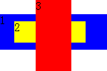
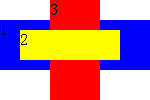
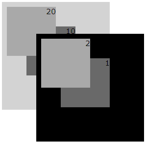
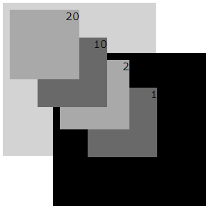

根据 W3C CSS2.1 规范中的描述，'z-index' 应用于定位元素（ 'position' 特性不是 static ），它接受整数值，默认值为 auto。
对于定位元素而言，'z-index' 意味着：
此处，有必要对层叠上下文和层叠级别做下说明。在 W3C CSS2.1 规范中，每个元素都具有三维的空间位置，除我们所熟悉的水平和垂直位置外，元素还可在 "Z轴"
方向上层层相叠、依次向前排开。
元素在 "Z 轴" 方向上的呈现顺序，由层叠上下文和层叠级别决定。
在文档中，每个元素仅属于一个层叠上下文。在给定的层叠上下文中，每个元素都有一个整型的层叠级别，它描述了在相同层叠上下文中元素在 "Z轴" 上的显示顺序。
同一个层叠上下文中，层叠级别大的显示在上，层叠级别小的显示在下，相同层叠级别时，遵循后来居上的原则（back-to-font）。
不同层叠上下文中，元素显示顺序以父级层叠上下文的层叠级别来决定显示的先后顺序。与自身的层叠级别无关。
每个层叠上下文都有如下的层叠级别组成（显示顺序从后到前）：
关于 'z-index' 及 层叠上下文（stacking context）的详细资料，请参考 CSS2.1 规范 9.9 Layered presentation 及 Appendix E. Elaborate description of Stacking Contexts 中的内容。
当定位元素的 'z-index' 未设置时（默认为 auto），在 IE6 IE7 IE8(Q) 下将会创建一个新的局部层叠上下文。而在其它浏览器下，则严格按照规范，不产生新的局部层叠上下文。
这个问题将导致定位元素的层叠关系在不同浏览器出现很大的区别，严重的可导致页面布局混乱、内容覆盖等。
| IE6 IE7 IE8(Q) |
|---|
分析以下代码：
<style type="text/css"> body { margin:0; } .p1{ top:20px; height:50px; width:150px;
background-color:blue;} .p2{ top:10px; left:20px; height:30px; width:100px; background-color:yellow;}
.p3{ top:0px; left:50px; height:100px; width:50px; background-color:red;} </style> <body>
<div style="position:relative;" class="p1">1 <div
style="position:absolute; z-index:1;" class="p2">2</div> </div>
<div style="position:absolute;" class="p3">3</div> </body>
在各浏览器下的结果汇总如下：
| IE6 IE7 IE8(Q) | IE8(S) Firefox Safari Chrome |
|---|---|
|  |  |
根据 W3C CSS2.1 规范中的说明，定位元素【p1】和【p3】由于未设置 'z-index' 特性（使用默认值 auto），它们不会创建新的局部层叠上下文，而定位元素【p2】设置了 z-index:1 则会创建新的层叠上下文。
另，在同一根层叠上下文中，同为 z-index:auto 的定位元素【p1】和【p3】，它们的层叠级别相同，但【p3】在【p1】之后，所以在 Z
轴上【p3】比【p1】靠前显示，又，【p2】层叠上下文的层叠级别为正数，所以【p2】的层叠级别要比【p3】高。因此，它们在 Z 轴上的顺序为：（遵循 back-to-font）
【p1】 -> 【p3】 -> 【p2】
以上为标准浏览器下的情况。
而在 IE6 IE7 E8(Q) 下，定位元素【p1】和【p3】都创建了新的局部层叠上下文，在同一根层叠上下文中，它们的层叠级别相同，但【p3】在【p1】之后，所以在 Z 轴上【p3】比【p1】靠前显示。此时，由于【p2】处于【p1】的层叠上下文中，所以【p2】在 Z 轴上要比【p3】靠后。
为了使 IE6 IE7 IE8(Q) 下 'z-index:auto' 的 Bug 更一目了然，进一步举例如下：
<style> .parent{width:200px; height:200px; padding:10px;} .sub{text-align:right; font:15px
Verdana;width:100px; height:100px;} .lt50{left:50px;top:50px;} </style> <div
style="position:absolute; background:lightgrey;" class="parent"> <div
style="position:absolute;z-index:20;background:darkgray;"
class="sub">20</div> <div
style="position:absolute;z-index:10;background:dimgray;" class="sub
lt50">10</div> </div> <div
style="position:absolute;left:80px;top:80px;background:black;" class="parent">
<div style="position:absolute;z-index:2;background:darkgray;"
class="sub">2</div> <div
style="position:absolute;z-index:1;background:dimgray;" class="sub
lt50">1</div> </div>
各浏览器下的结果汇总如下：
| IE6 IE7 IE8(Q) | IE8(S) Firefox Safari Chrome |
|---|---|
|  |  |
理解层叠上下文、层叠级别与 'z-index' 之间的关系。在可能出现定位元素相互覆盖的情况时，明确指定定位元素的 'z-index' 特性，避免此问题的出现。
| 操作系统版本: | Windows 7 Ultimate build 7600 |
|---|---|
| 浏览器版本: |
IE6
IE7 IE8 Firefox 3.6 Chrome 5.0.335.1 dev Safari 4.0.4 |
| 测试页面: |
z-index_def.html
z-index_def_2.html |
| 本文更新时间: | 2010-07-21 |
z-index stack level stacking context 层叠 级别 上下文